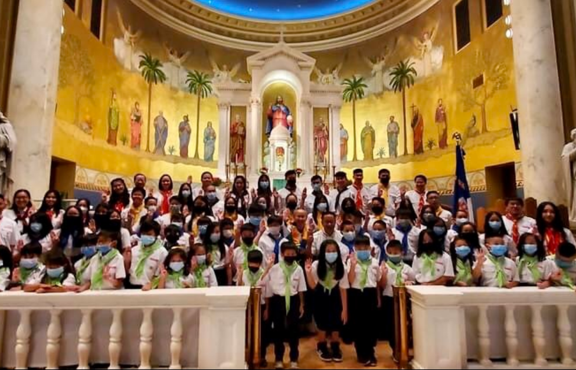
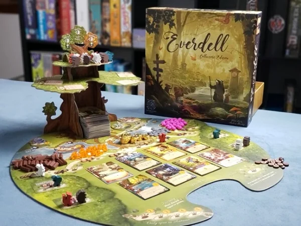
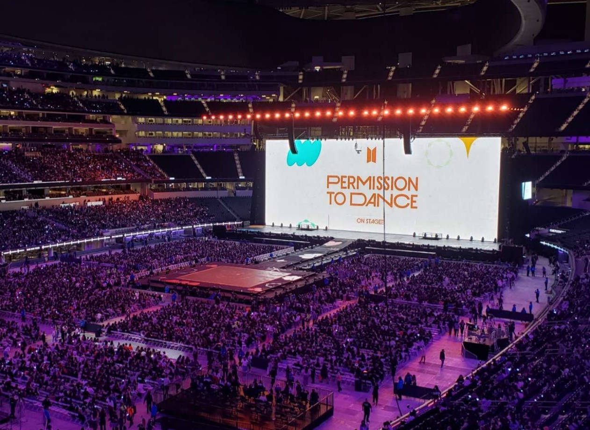

I am a youth leader in organization called the Vietnamese Eucharistic Youth Movement.
Above is a picture of the day our Omaha chapter was established. You can find me on the top left!
Board Games

Above is one of my favorite board games called "Everdell". It's a worker placement game where you gather resources to
make a town of woodland creatures and compete to see who's town is the best!
Korean Pop Music (K-pop)

I listen to K-pop which is a term for Korean Pop. Groups or soloists typically sing or rap while performing choreography.
Above is a picture from a concert I went to last year of the popular boy group, BTS.